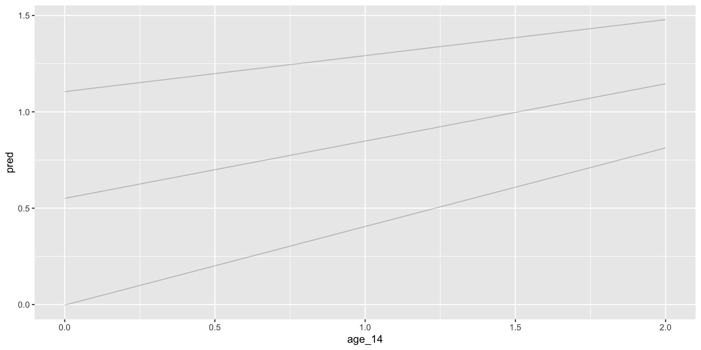

We are now going to introduce predictors to our growth models beyond time. These predictors are similar to predictors in standard regression – dummy for nominal, interactions change lower order terms, etcetera.
This is all just regression, so the same interpretation is the same. It is now only harder because we have multiple levels and lots of potential for interactions
Level 2 group predictors
Do groups differ in their initial status? Level 2, person variable that is dummy coded. Note that group here only is measured once, it is a between person variable.
Notice we have a new gamma term, \(\gamma_{01}\). How do we interpret this new fixed effect, especially in the presence of other fixed effects?
\(\gamma_{00}\) is the intercept and can be considered the value when G = 0 and time = 0, whereas the \(\gamma_{01}\) is the difference in initial values between groups.
The value for group = 1? \(\gamma_{00} + \gamma_{01}\)
One thing to keep in mind is that we are now changing the meaning of the random effect. Now that we have a predictor in the model, the \(U_{0j}\) is the person specific deviation from the group predicted intercept, not the grand mean intercept.
Understanding how to re-write the equation will help for calculating estimated scores for your predictors in addition to being able to interpret the coefficients.
Similar to before, the interpretation of \(U_{1i}\) changes. The term is now what is left over after accounting for group differences in the mean slope.
Notice that when we combine Level 1 and Level 2, the slope effect predictor becomes an interaction with time. Anytime you have a predictor of time that will be an interaction with time in that we are asking does group status (or what ever variable) differs in their relationship between time and your DV.
Linear mixed model fit by REML ['lmerMod']
Formula: alcuse ~ age_14 + (age_14 | id)
Data: alcohol
REML criterion at convergence: 643.2
Scaled residuals:
Min 1Q Median 3Q Max
-2.48287 -0.37933 -0.07858 0.38876 2.49284
Random effects:
Groups Name Variance Std.Dev. Corr
id (Intercept) 0.6355 0.7972
age_14 0.1552 0.3939 -0.23
Residual 0.3373 0.5808
Number of obs: 246, groups: id, 82
Fixed effects:
Estimate Std. Error t value
(Intercept) 0.65130 0.10573 6.160
age_14 0.27065 0.06284 4.307
Correlation of Fixed Effects:
(Intr)
age_14 -0.441
Code
fit2 <-lmer(alcuse ~ age_14 + male + (age_14 | id), data = alcohol)summary(fit2)
Linear mixed model fit by REML ['lmerMod']
Formula: alcuse ~ age_14 + male + (age_14 | id)
Data: alcohol
REML criterion at convergence: 644.6
Scaled residuals:
Min 1Q Median 3Q Max
-2.48295 -0.38330 -0.07969 0.38766 2.49001
Random effects:
Groups Name Variance Std.Dev. Corr
id (Intercept) 0.6482 0.8051
age_14 0.1552 0.3939 -0.23
Residual 0.3373 0.5808
Number of obs: 246, groups: id, 82
Fixed effects:
Estimate Std. Error t value
(Intercept) 0.63375 0.14459 4.383
age_14 0.27065 0.06284 4.307
male 0.03427 0.19103 0.179
Correlation of Fixed Effects:
(Intr) age_14
age_14 -0.326
male -0.677 0.000
Code
fit3 <-lmer(alcuse ~ age_14 * male + (age_14 | id), data = alcohol)summary(fit3)
Linear mixed model fit by REML ['lmerMod']
Formula: alcuse ~ age_14 * male + (age_14 | id)
Data: alcohol
REML criterion at convergence: 641.4
Scaled residuals:
Min 1Q Median 3Q Max
-2.4830 -0.4562 -0.1830 0.3548 2.3953
Random effects:
Groups Name Variance Std.Dev. Corr
id (Intercept) 0.6383 0.7989
age_14 0.1374 0.3707 -0.20
Residual 0.3373 0.5808
Number of obs: 246, groups: id, 82
Fixed effects:
Estimate Std. Error t value
(Intercept) 0.74562 0.15161 4.918
age_14 0.12129 0.08747 1.387
male -0.18415 0.21184 -0.869
age_14:male 0.29161 0.12223 2.386
Correlation of Fixed Effects:
(Intr) age_14 male
age_14 -0.432
male -0.716 0.309
age_14:male 0.309 -0.716 -0.432
Code
library(modelr)alcohol %>%data_grid(age_14 =seq_range(age_14, n =5), male, .model = alcohol)
Linear mixed model fit by REML ['lmerMod']
Formula: alcuse ~ age_14 * cpeer + (age_14 | id)
Data: alcohol
REML criterion at convergence: 615.4
Scaled residuals:
Min 1Q Median 3Q Max
-2.51919 -0.40761 -0.07863 0.39879 2.40565
Random effects:
Groups Name Variance Std.Dev. Corr
id (Intercept) 0.3369 0.5804
age_14 0.1469 0.3832 -0.06
Residual 0.3373 0.5808
Number of obs: 246, groups: id, 82
Fixed effects:
Estimate Std. Error t value
(Intercept) 0.65164 0.08681 7.507
age_14 0.27058 0.06203 4.362
cpeer 0.75877 0.11974 6.337
age_14:cpeer -0.15138 0.08556 -1.769
Correlation of Fixed Effects:
(Intr) age_14 cpeer
age_14 -0.410
cpeer 0.001 0.000
age_14:cper 0.000 0.001 -0.410
Plotting
library(report)alcohol %>%report_sample()
# Descriptive Statistics
Variable | Summary
---------------------------------
Mean X (SD) | 123.50 (71.16)
Mean id (SD) | 41.50 (23.72)
Mean age (SD) | 15.00 (0.82)
Mean coa (SD) | 0.45 (0.50)
Mean male (SD) | 0.51 (0.50)
Mean age_14 (SD) | 1.00 (0.82)
Mean alcuse (SD) | 0.92 (1.06)
Mean peer (SD) | 1.02 (0.73)
Mean cpeer (SD) | -0.00 (0.73)
Mean ccoa (SD) | 0.00 (0.50)
alcohol %>%data_grid(age_14 =seq_range(age_14, n =5), cpeer =c(-.73,0,.73), .model = alcohol) %>%add_predictions(fit6) %>%ggplot(aes(y = pred, x = age_14, group = cpeer)) +geom_line(alpha = .2)

Multiple predictors
Interpretations with multiple predictors in regression extend to MLMs. For example, health across time, examining the effects of an intervention, while controlling for initial exercise status?:
Changing the scale of your predictors changes the interpretation of your model.
Original metric (no centering)
Group-mean centering (our group/nesting is person so this is also called person centering). This will be more appropriate when we talk about level 1 predictors.
Group grand-mean centering (centering around person avg)
Grand-mean centering (this is taking the average across every obs)
Centering on a value of theoretical or applied interest
Time considerations
We typically center time around each person’s initial time to make the intercept more interpretable. However, this can cause correlations between an intercept and a slope.
If high, the correlation can be problematic in terms of estimation. Often we center time in the middle of the repeated assessments to minimize this association.
Doing so is especially important if you want to use some variable to predict intercept and slope (or use intercept/slope to predict some variable).
What if people don’t have the same number of assessment waves or the same timespan? Where do you center? One option, is to center within each person’s own time, regardless of whether it lines up with others. This is nice because it makes the \(\gamma_{00}\) interpretable as the average score across people.
However, what is the average score? If you are looking at longitudinal data where people span in age from 20 to 80 and the time each person was in the study differed from 1 to 10 years. How do you interpret the average person intercept?
Thus you may want to center on something constant across people, like age. The \(\gamma_{00}\) can now easily be interpreted as age 40, for example. Buuut, this results in wonky residual terms, perhaps leading to greater covariance between intercept and slope.
Level 2 centering
Because level 2 is involved with cross-level interactions, it is always helpful to at least consider centering. For level 2, the centering options are much easier, as one can generally go with grand mean centering.
As everyone has only 1 value to contribute to, the calculation and the interpretation is more straightforward. It is thus also equivalent to group grand-mean centering.
What are the interpretations for the coefficients for exercise centered vs non-centered?
Some variables that are inherently level 2 (e.g. handedness), some that make sense more as a level 1 (e.g., mood) and some that could be considered either depending on your research question and/or your data (e.g. income).
These variables can be treated as another predictor with the effect of “controlling” for some level 1 variable as well as a focal variable.
Consider health across time predicted by a level 1 exercise variable (1 = yes, exercised).